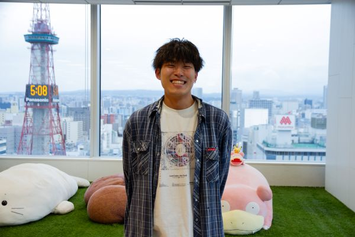
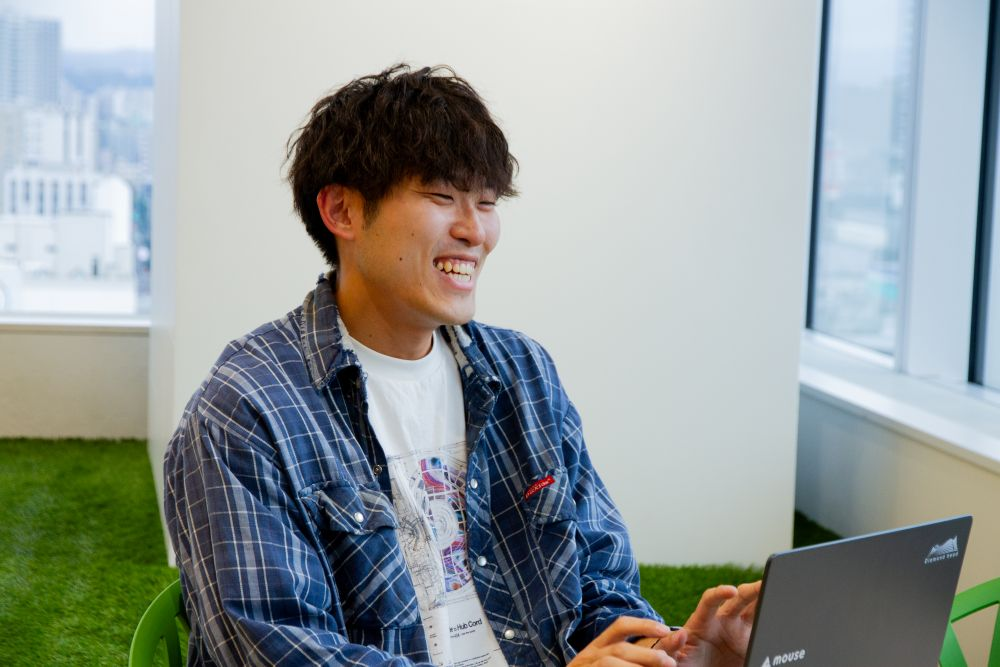
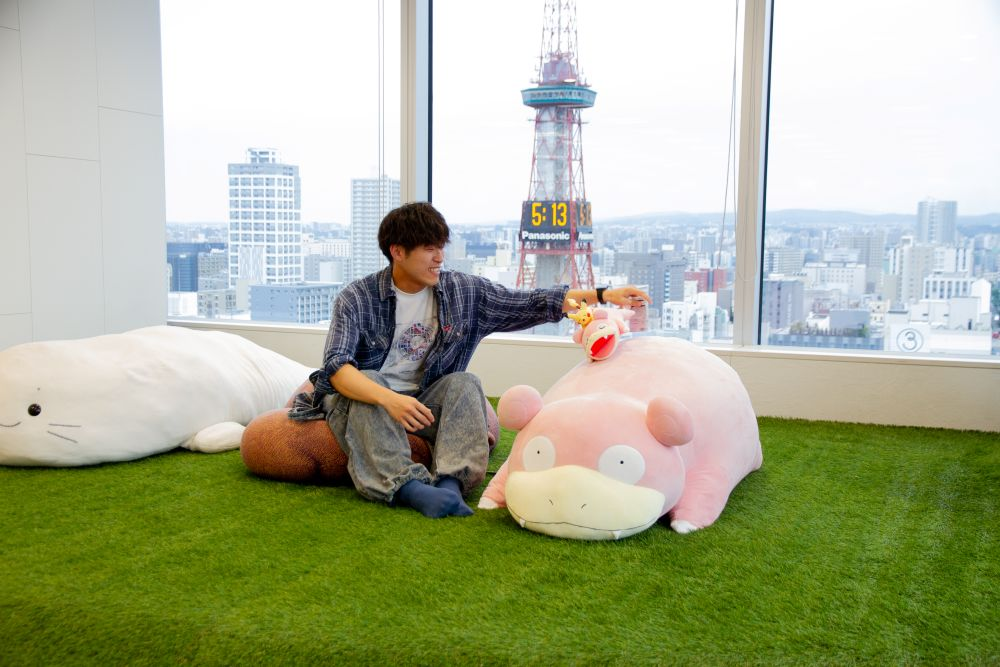

「今しかできないこと」を全力で。
ECサイト立ち上げを牽引する若きリーダー

松尾 満天
弘前大学で情報系を専攻後、インターンシップを経て新卒で入社。現在はEC/OMOプラットフォーム「F.ACE（フェイス）」の新規導入プロジェクトでリーダーを務め、開発指揮やチームの進行管理を担う。趣味は旅行。社内イベントの幹事も積極的に引き受けるアクティブな性格。
入社数年で新規サイト立ち上げの最前線に立ち、チームを牽引する松尾さん。複数のプロジェクト進行やシステムの本稼働に向けた壁など、現場のリアルな課題を彼はどのように乗り越えてきたのでしょうか。日々の業務から、今後のキャリアに対する率直な野心、そして仕事に向き合う熱量について詳しくお話を伺いました。
1. オンもオフも「今しかできないこと」を
松尾：はい、休日は外に出ていることが多いですね。今年は色々なところへ旅行に行っていて、福島、仙台、東京、大阪、そして九州にも行く予定です。先日も美味しい日本酒を求めて、新潟の佐渡島まで一人で足を運んできました。
松尾：社内イベントの企画や運営が好きなんです。私自身の価値観として、「今挑戦したいことは、今しかできない」と考えています。例えば、5年後や10年後に今と同じように全国を飛び回りたいと思っているかは分かりません。
だからこそ、「やってみたい」と思った瞬間にすぐ動き出せるようなフットワークの軽さを大切にしています。その根底にある思いが、幹事を務めたり、仕事で高い目標を追ったりする姿勢に繋がっているのだと思います。

2. OMOの要「F.ACE」
松尾：大学では情報系を専攻していました。当社を知ったきっかけは友人の紹介です。もともとファッションが好きだったこともあり、友人が参加していた当社のインターンシップに魅力を感じて、3年次の夏に参加しました。そこで事業内容や社風に惹かれ、ご縁があって入社に至りました。
松尾：オンラインの会員登録から決済まで標準で様々な機能が含まれているECプラットフォームです。一般的なECサイト構築システムという側面だけでなく、最大の強みは「店舗とのかかわりが強いOMO（Online Merges with Offline）施策」ができることです。ECサイトから店舗への取り置きや、試着予約などがセットになっています。
また、DHが提供する他のプロダクトとスムーズな連携ができることがビジネス上の大きな武器です。例えば、「在庫を直接管理するのではなく、DHのSCS（在庫管理システム）を連携させませんか？」とご提案することで、クライアント様の満足度も高くなります。
受け身でいるのではなく、
自ら「やりたい」と手を挙げる姿勢を大切にしたい。
3. 開発の最前線：プレッシャーを乗り越える力
松尾：ここ1年ほどは、モール系ECサイトのオープンに向けたプロジェクトを取りまとめています。私を含め5名のチームで、メンバーの開発レビューや品質担保を行いながら、自身でもコーディングを担当しています。対外的には、設計フェーズから参画し、クライアント様との要件定義やスケジュールの調整、想定している進行とのすり合わせなど、多岐にわたる業務を並行して進めています。
松尾：入社直後から2年目にかけて、開発をメインで担当していた時期は苦労も多かったです。また、ECサイトの立ち上げにおいて、2つの案件を同時進行で担当したこともありました。課題管理ツールに30件近くのタスクが溜まり、クライアント様からも多種多様なご要望やお問い合わせをいただきました。
しかし、そこで立ち止まるわけにはいきません。状況を冷静に把握し、集中して一つ一つの優先順位を見極めながら対応していきました。結果的にそれらを無事にリリースまで導けたことは、今の自分にとって非常に大きな経験値となっています。
松尾：最も緊張感が高まるのは、リリース後にシステムトラブルや不具合が発生した際です。発生した瞬間に対応工数が跳ね上がります。社内や社外への連絡対応と、不具合の修正を同時に進行させなければなりません。自らが引き起こしてしまうケースもありますが、その際はつきっきりで先方とすり合わせを行い、リカバリーに奔走します。このプレッシャーの中で培われる対応力は、現場でしか鍛えられない部分だと感じています。

4. 自らの意思でキャリアを創っていく
松尾：今後はマネージャーを目指したいと考えています。理由の一つは、私自身が「人の成長を後押しすること」にやりがいを感じるからです。現在はメンターとして後輩の指導も行っていますが、メンバーがどのようなキャリアを歩みたいのかに伴走できる立場になりたいですね。
もちろん責任は伴いますが、自らの意思決定が案件や人を動かし、ビジネスへダイレクトに影響を与えていく過程は非常に魅力的です。ビジネスを大きく動かし、会社や事業の成長にしっかりと貢献できるようなインパクトを与えていきたいという思いがあります。
松尾：そうですね、「面白そうだからこの業務に挑戦したい」と自ら手を挙げて経験を積んできた部分は大きいです。DHは、そうした前向きな声をとても尊重して受け入れてくれる環境です。業務に限らず、「社内イベントの幹事をやりたい」といった声も拾ってくれます。自らの意思でキャリアを築いていきたい方には、非常に働きやすい会社だと思います。
松尾：DHには、周囲に優しく、真摯に業務に向き合うメンバーが揃っています。だからこそ、受け身でいるよりも「自分から動いていく」「チームをこうしていきたい」という前のめりな姿勢を持つ方が、より活躍できる環境です。ぜひ当事者意識を持ち、周囲を巻き込みながらプロダクトを良くしていこうという気概を持った方と一緒に働きたいですね。お待ちしております！